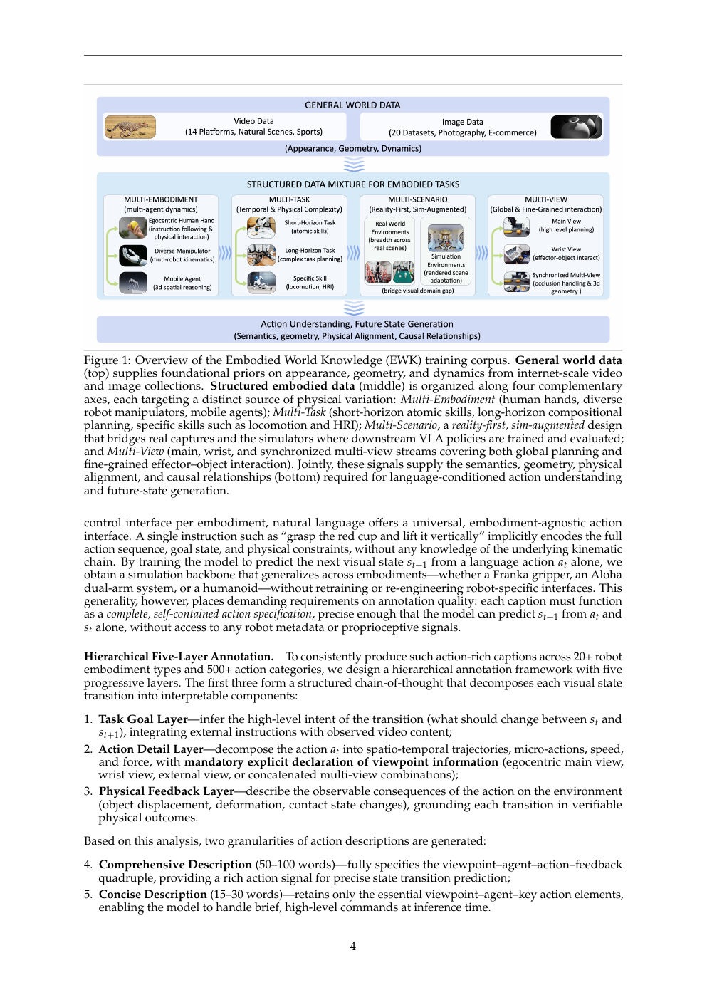
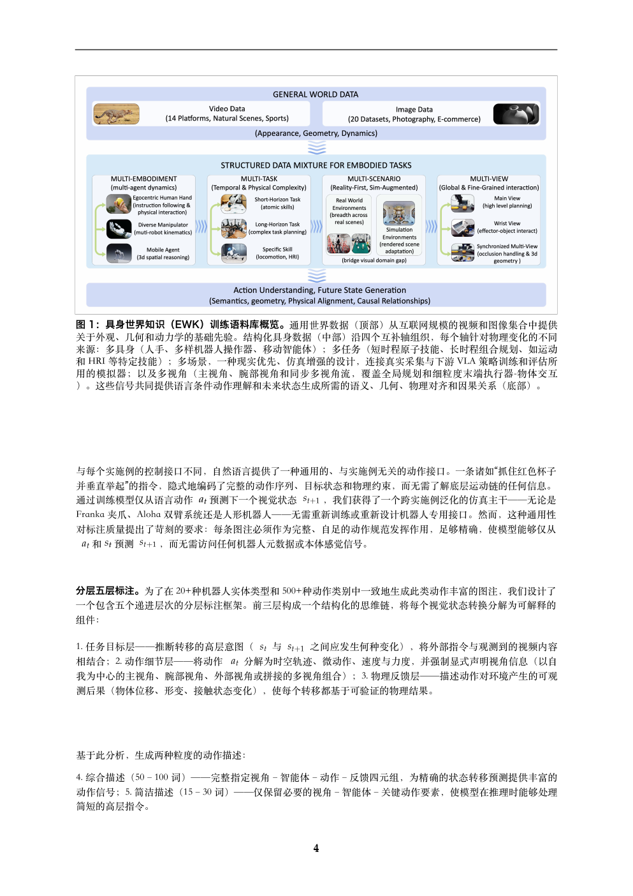
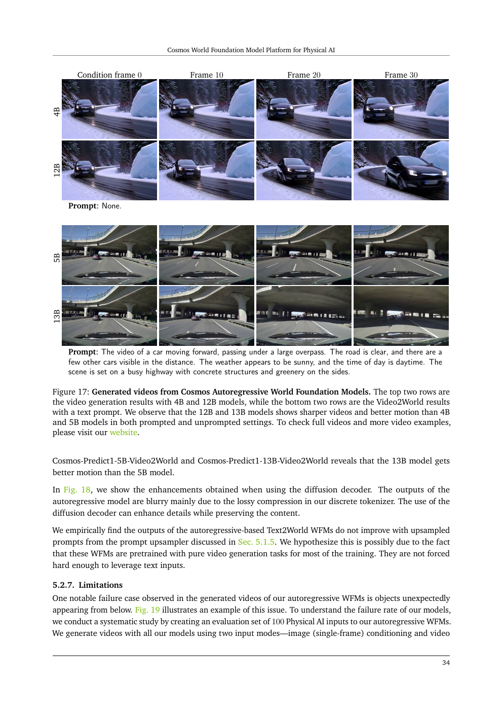
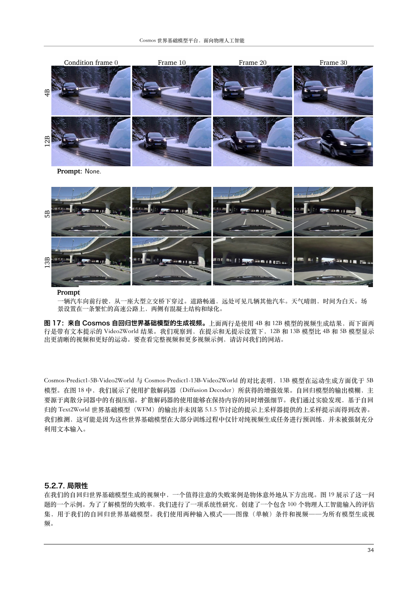
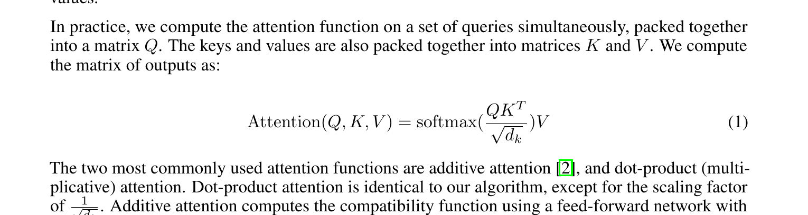
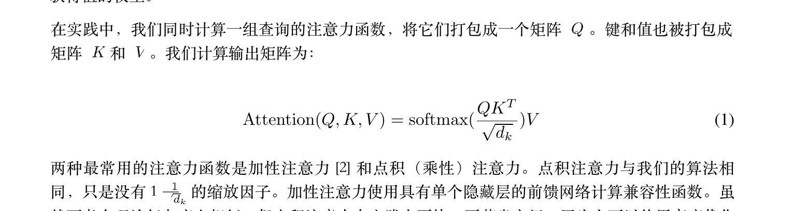

英文论文
原版式读中文
公式 · 图表 · 双栏排版 零破坏
保版式学术论文 PDF 翻译系统（英→中）：对象级保护 + LLM 翻译 + 可机读 QA 审计，Web 部署与 Agent Skill 双模式。
读英文论文，卡在哪里？
公式挤出边界 · 双栏并成一栏 · 图表漂移遮挡正文
翻译是流水线，版式是契约
从 PDF 进、到双 PDF 出，每一步都有确定性的检查点。
逐对象分类，该动的才动
Qwen-RobotWorld Technical Report


Cosmos：75 页第 34 页，质量不衰减


经典论文，只看最难的细节




遵守论文许可：Attention / ResNet 为 arXiv 非独占许可（非 CC），按政策仅展示小幅局部对比与聚合指标；完整页展示仅用 CC BY 4.0 论文。
不只翻译，还要留下证据
↺ 仅当错误分严格下降才替换产物，否则回滚快照 · 全程写入 *.qa.json
- Golden pages 回归：字体 / 平台变体的金样页面锁定既有质量
- 1855 个自动化测试用例：聚焦 PDF fixture 逐类锁定缺陷
- 基准门控：30 篇论文批次跑 translate → evaluate → gate 三段脚本
浏览器里的论文翻译工作台
在 Claude Code / Cursor 里一句话翻译
一条确定性流水线，从解析到回滚

真实界面，真实速度

30 篇论文，盯住每一种版式
classic20：Attention、ResNet、BERT 等经典论文严格门控批次；worldmodel10：Cosmos、DreamGen 等世界模型前沿论文。
10 个版式轴全覆盖 · 每篇每页跑同一套严格 QA 门槛
蓝 = classic20 经典批次 · 橙 = worldmodel10 世界模型批次
每个数字，都有证据指针
事实纪律：数字对应仓库内基准清单、QA 报告与测试套件；不凭印象汇报，欢迎跑一遍复核。
两条路，都是几分钟的事
部署成课题组网站
git clone https://github.com/asimfish/super_translate.git
cd super_translate
cp .env.example .env # 填 API key 与访问令牌
docker compose up -d --build
打开 https://你的域名 上传第一篇论文；VPS + HTTPS、备份与排障见 docs/DEPLOYMENT.md。
装进你的 AI 编辑器
git clone https://github.com/asimfish/super_translate.git
mkdir -p ~/.claude/skills
ln -s "$PWD/super_translate/skills/paper-translate" \
~/.claude/skills/paper-translate
然后对话里说：「把 paper.pdf 翻译成中文，保留原版式」；Cursor 用户链到项目 .cursor/skills/ 即可。
接下来做什么（规划中）
以 GitHub Issues 为准，欢迎认领与讨论——AGPL-3.0，动手改就是你的。
让每一篇英文论文，都能原版式读中文。
项目主页：asimfish.github.io/super_translate · 效果对比可在主页拖动分割线逐像素查看